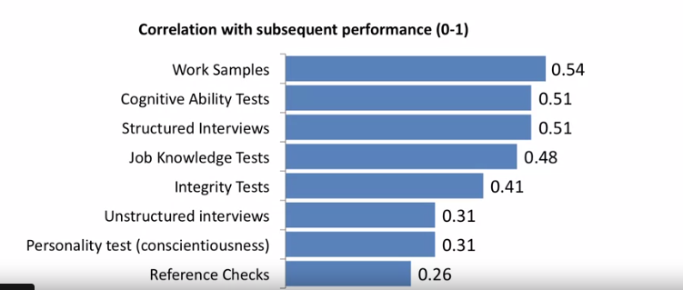

Staffing Analytics
Most of the times during our team meetings or discussions, we come across questions like; how do we bring down attrition, or how do we engage the right people at the right job; etc.
Interestingly, we often end up with the statement, are we hiring the right people?
We should get the right people at the job - this means that we should hire the right people and allow them to work on something they’re passionate about and eventually also plan for their career growth.
Hiring - Predicting performance (we want to know who is going to perform best in the job)
We hire a bunch of people, some of them work out, some of them don't. A lot of people leave their jobs fairly quickly which suggests this was not a good match, and this pretty much happens everywhere. When you think about what hiring is; often we think about it as a match. It's almost like dating. It's about finding the right chemistry.
How do we find out the best fit for the role?
There are different approaches that organisations use in order to try and screen applicants. These potential candidates are assessed based on the correlation between their interests and the job roles. correlation is basically a measure of how closely two variables move together. (correlation of zero means these things are totally unrelated to one another of correlation of one means they move together perfectly that they could almost be the same thing).

Having looked at the correlations, we understand that there are a number of things which are good predictors of predict performance.
For ex: If you want to hire technical writers, maybe you'll give them a description of your product and ask them to author a sample describing the product. Another very effective and surprising way to test is the cognitive ability, It turns out that general intelligence is quite predictive of performance in a very wide range of jobs. Some organizations have candidates taking an IQ test, if intelligence is something they care about todrive performance.
There is another very interesting term which is being used by our famous psychologist- Daniel Kahneman, which is called Illusion of validity, which means, a sense that we think we know much more about people than we actually do, this term here refers to a type of interview known as unstructured interview In these types of interviews, we meet someone and we talk to them. In the process, we try and get a sense of who they are, what they're like, what might be their strengths and weaknesses. But, when we sit down and we talk to people, and try and figure out what they're like is really giving into the illusion of validity, we don't know or learn very much, but whatever biases, prejudices we have, they fill up the whole room in our mind in terms of actually judging them. So unstructured interviews are found to be really pretty bad at predicting what people are going to do and how they are going to perform.
Structured interviews, on the other hand, are interviews designed to assess specific characteristics of the individual, and understand if an individual has the attributes needed for the job. They're found to be fairly predictive.
Fine tuning Predictors of Performance
Let's understand how people analytics helps us predict people's performance. What people analytics allows us to do is go beyond the general idea, and start thinking for the specific job. It allows us to think - what do we know about what makes people effective and what doesn't? People analytics also helps us take an individual’s performance, and estimate how do they do at their job, and try to understand what the underlying motivations.
Ex 1: In a call center where we have huge amounts of data, People Analytics helps us assess what is the average handle time by a customer support executive absenteeism, how does their availability look like. We could also obtain quality assurance and customer satisfaction service indicators.
Ex 2: Some organizations spend a lot of money on training people. In such organisations, it becomes important to think about who is going to stay back in your organization for longer periods of time as it leads to higher return on investment.
There is a very interesting point discussed in the course - how do we predict who is going to be a high performer?
There is a nice story about JetBlue Airlines about how they have used People Analytics to make better decisions during their hiring process. So, when they hire flight attendants, one of the big questions was - is it more important that they're friendly or that they're helpful?
They ran an experiment to figure this out. They asked their customers to rate their flight attendants. Is this person friendly? Are they helpful? What do you think? And also to rate their overall customer experience. Are they likely to recommend JetBlue to somebody else? They assessed what factor between helpful and friendly contributed to a higher rating of the airline. Based on the findings, they discovered that flight attendants being more helpful was more valuable to them as a business. This enabled them to further fine tune their hiring process.
Originally published on Learnings in 2020. View the original post.